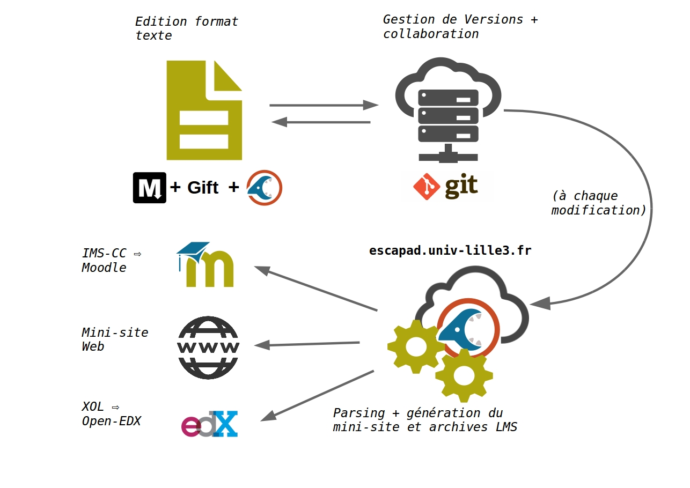

<!doctype html>
<html lang="en">

	<head>
		<meta charset="utf-8">

		<title>reveal.js - The HTML Presentation Framework</title>

		<meta name="description" content="A framework for easily creating beautiful presentations using HTML">
		<meta name="author" content="Hakim El Hattab">

		<meta name="apple-mobile-web-app-capable" content="yes" />
		<meta name="apple-mobile-web-app-status-bar-style" content="black-translucent" />

		<meta name="viewport" content="width=device-width, initial-scale=1.0, maximum-scale=1.0, user-scalable=no, minimal-ui">

		<link rel="stylesheet" href="css/reveal.css">
		<link rel="stylesheet" href="css/theme/white.css" id="theme">
		<link rel="stylesheet" href="css/custom.css">

		<!-- Code syntax highlighting -->
		<link rel="stylesheet" href="lib/css/zenburn.css">
		<script type="text/javascript" src="plugin/markdown/marked.js"></script>

		<!-- Printing and PDF exports -->
		<script>
			var link = document.createElement( 'link' );
			link.rel = 'stylesheet';
			link.type = 'text/css';
			link.href = window.location.search.match( /print-pdf/gi ) ? 'css/print/pdf.css' : 'css/print/paper.css';
			document.getElementsByTagName( 'head' )[0].appendChild( link );
		</script>

		<!--[if lt IE 9]>
		<script src="lib/js/html5shiv.js"></script>
		<![endif]-->
	</head>

	<body>

		<div class="reveal">

			<!-- Any section element inside of this container is displayed as a slide -->
			<div class="slides">

				<section data-markdown>

					<script type="text/template">
						


						** Point d'avancement et perspectives **

						*


						*Réunion UNR -  29 novembre 2016*
				    </script>

				</section>


				<section data-markdown>
					<script type="text/template">
						Séparer **édition** & **diffusion** de contenus pédagogiques
						

					</script>
				</section>

        <section data-markdown>
          <script type="text/template">
            Automatiser édition contributive de contenus pédagogiques multi-canaux

            

          </script>
        </section>

				<section data-markdown>
					<script type="text/template">
					### Démonstration

- Edition du code source
- commit + push (git)
- lien vers site généré
- chargement d'une archive dans un LMS
- documentation

					</script>
				</section>

				<section data-markdown>
					<script type="text/template">
          ### Perspectives

          - developpement d'un mode "web service" sans persistence sur dépôt GIT
          - étendre la courverture de tests unitaires (fiabilité)
          - recrutement d'un stagiaire pour poursuivre le développement
          - intégrer des modules Esc@pad dans Pandoc ou Atom
          - développer un éditeur en ligne
          - service de conversion Moodle vers EDX/Web


					</script>
				</section>

				<section data-markdown>
					<script type="text/template">
						Contacts :

						[culturenumerique.univ-lille3.fr](http://culturenumerique.univ-lille3.fr)


					</script>
				</section>
			</div>

		</div>

		<script src="lib/js/head.min.js"></script>
		<script src="js/reveal.js"></script>

		<script>

			// Full list of configuration options available at:
			// https://github.com/hakimel/reveal.js#configuration
			Reveal.initialize({
				controls: true,
				progress: true,
				history: true,
				center: true,

				transition: 'slide', // none/fade/slide/convex/concave/zoom

				// Optional reveal.js plugins
				dependencies: [
					{ src: 'lib/js/classList.js', condition: function() { return !document.body.classList; } },
					{ src: 'plugin/markdown/marked.js', condition: function() { return !!document.querySelector( '[data-markdown]' ); } },
					{ src: 'plugin/markdown/markdown.js', condition: function() { return !!document.querySelector( '[data-markdown]' ); } },
					{ src: 'plugin/highlight/highlight.js', async: true, condition: function() { return !!document.querySelector( 'pre code' ); }, callback: function() { hljs.initHighlightingOnLoad(); } },
					{ src: 'plugin/zoom-js/zoom.js', async: true },
					{ src: 'plugin/notes/notes.js', async: true }
				]
			});

		</script>

	</body>
</html>
